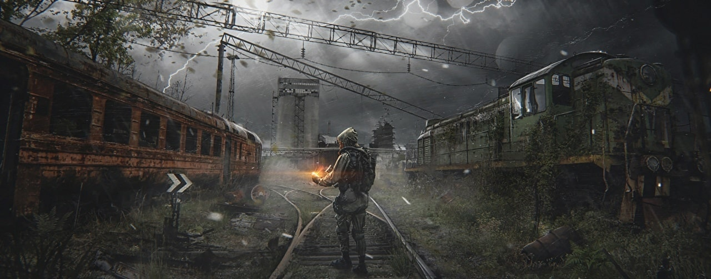

Як гравець, я маю сказати, що Об’єднаний Пак 2.2. для S.T.A.L.K.E.R. - це надзвичайно захопливий та високоякісний мод, який максимально поглинає вас у світ цієї непередбачуваної та загадкової Зони. Я пройшов його повністю, і враження залишилися неймовірними. Одне з найбільших переваг цього моду - це його розширена квестова складова. Нові сюжетні лінії додають глибину та цікавість до гри, а відгалуження та зміни вже відомих сюжетів роблять їх ще цікавішими та неочікуваними. Розробники дійсно прислухалися до гравців, і я помітив, що було виправлено багато логічних помилок та недоліків, що раніше робили деякі моменти сюжету незрозумілими або нелогічними. Ігровий процес також значно покращений. Баланс та збройовий пак були серйозно оновлені, що дозволило мені насолоджуватися більш різноманітним та захоплюючим геймплеєм. Нові зброї та предмети додали глибину та різноманітність в мої зустрічі з ворожими фракціями та сталкерами.
Нові модифікації

Останні новини

GSC Game World почали купляти рекламні інтеграції в ютуб блогерів

Рекламна інтеграція гри S.T.A.L.K.E.R. 2: Heart of Chernobyl була помічена на ігровому каналі Toasted Team (Який на даний момент має 173 тис. підписників). Раніше неодноразово рекламу гри можна було побачити в соціальних мережах
GSC Game World почали купляти рекламні інтеграції в ютуб блогерів
Рекламна інтеграція гри S.T.A.L.K.E.R. 2: Heart of Chernobyl була помічена на ігровому каналі Toasted Team (Який на даний момент має 173 тис. підписників). Раніше неодноразово рекламу гри можна було побачити в соціальних мережах
GSC Game World почали купляти рекламні інтеграції в ютуб блогерів
Рекламна інтеграція гри S.T.A.L.K.E.R. 2: Heart of Chernobyl була помічена на ігровому каналі Toasted Team (Який на даний момент має 173 тис. підписників). Раніше неодноразово рекламу гри можна було побачити в соціальних мережах
GSC Game World почали купляти рекламні інтеграції в ютуб блогерів
Рекламна інтеграція гри S.T.A.L.K.E.R. 2: Heart of Chernobyl була помічена на ігровому каналі Toasted Team (Який на даний момент має 173 тис. підписників). Раніше неодноразово рекламу гри можна було побачити в соціальних мережах
Нове відео
Топ 10 кращих модів
Остання рецензія
нові коментарі

Дебільний конкурс якщо чесно. Краще б щось путнє про гру розповіли. Єдина користь від такого конкурсу - так це те, що можна потенційно додуматися, які угруповання будуть у грі.
Дебільний конкурс якщо чесно. Краще б щось путнє про гру розповіли. Єдина користь від такого конкурсу - так це те, що можна потенційно додуматися, які угруповання будуть у грі.
Дебільний конкурс якщо чесно. Краще б щось путнє про гру розповіли. Єдина користь від такого конкурсу - так це те, що можна потенційно додуматися, які угруповання будуть у грі.
Дебільний конкурс якщо чесно. Краще б щось путнє про гру розповіли. Єдина користь від такого конкурсу - так це те, що можна потенційно додуматися, які угруповання будуть у грі.
Дебільний конкурс якщо чесно. Краще б щось путнє про гру розповіли. Єдина користь від такого конкурсу - так це те, що можна потенційно додуматися, які угруповання будуть у грі.
Дебільний конкурс якщо чесно. Краще б щось путнє про гру розповіли. Єдина користь від такого конкурсу - так це те, що можна потенційно додуматися, які угруповання будуть у грі.
Купити гру
Налаштування дизайна сайта

Налаштування шапки
Пройшов модифікацію
(10/10)